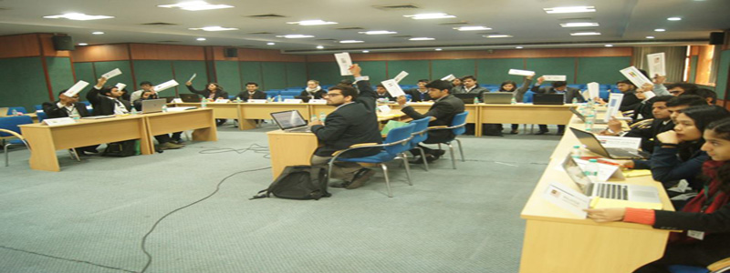

- 
Amity International Model United Nations is a simulation of the United Nations which spans over a period of three days. At AMIMUN, delegates learn about diplomacy, international relations, the United Nations and to debate issues that confront world leaders and to draft resolutions in response to these global issues. MUN involves and teaches research, public speaking, debating, and writing skills, in addition to critical thinking, teamwork, and leadership abilities. AMIMUN'16 will be the fifth edition of the Amity International Model United Nations. The first edition of AMIMUN was in 2011, followed by AMIMUN'12 ,AMIMUN'14 and AMIMUN'15.
The research and preparation required, the adoption of views and attitudes other than their own, the involvement and interaction with so many other young people from various backgrounds, all combine to give the young students a deep insight into the real world problems and makes them aware of the causes of conflict between nations and leads them to a better understanding of interests and motivation of others. Thus AMIMUN attempts to fulfil the aims and goals set by the founders of the United Nations in the Preamble to the Charter of the United Nations: "to practice tolerance and live together in peace with one another as good neighbours.
ABSOLUTE COMMITMENT :
The Secretariat of Amity International Model United Nations Conference consists of extremely hard working and knowledgeable individuals who have been carefully selected especially for this purpose. They are dedicated and committed to AMIMUN ideals, which ensures smooth running of all the committees. Delegates leave our conference with a great experience as well as a satisfaction in their heart.
INTERNATIONAL PLATFORM :
Amity is the leading education group of India with over 1, 00,000 students studying across 1000 acres of hi-tech campuses. At Amity we are passionate about growing leaders who are not only thorough professionals but also good human beings. Amity University is among the leading technical institutions of the country with distinguished alumni who have achieved success in various corners of the world. Thus AMIMUN provides a huge international platform to the delegates to interact with individuals from different countries and backgrounds. This edition of AMIMUN is being held in association with Indonesia MUN, MUNation and Young Leaders' Consortium.
CREATIVE AND INNOVATIVE :
We here at AMIMUN believe in new ideas, and supporting this idea in this edition of AMIMUN we have 7 committees which span a wide range of agendas and deliberation. These committees bring a freshness and higher levels of enthusiasm to the conference. They will ensure that delegates will not only learn debating and public speaking but they will also have a chance to develop new ideas and have fun.